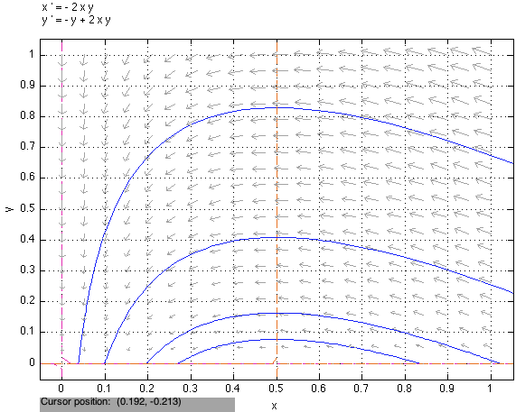

16 Linearization of ODEs
16.1 Introduction
Previously we learned to analyze and solve linear ODEs with two variables. The main idea was that the type of dynamics in a multivariable ODE is completely determined by the eigenvalues of the defining matrix, with the eigenvectors and initial conditions providing the relative weights of the variables. We will use these ideas to analyze nonlinear models, for which, typically, no analytical solution exists. Instead, we will focus on phase plane analysis to qualitatively describe the types of solutions possible for a dynamical system.
The main idea of this chapter is linearization, or approximating a nonlinear dynamical system with a matrix near a particular fixed point. This enables the use of the tools of linear algebra to characterize the local dynamics of the system. Linearization is an essential tool of applied mathematics and is quite powerful, even though it is not exact, and only applies in a local, possibly small neighborhood of a fixed point. In the next chapter, the stability of fixed points and the direction of flow of solutions will be used to obtain a more comprehensive picture of dynamics in the phase plane.
In this chapter, we will see examples of nonlinear ODEs in biology in the modeling section, and discuss the origin of product terms. In the analytical section, we will learn to linearize differential equations with more than one variable, and to analyze the dynamics near fixed points for two-variable ODEs. In the computational section, we will use numerical methods to find the eigenvalues of the linearized systems, and use computational tools for drawing the phase plane portraits near the fixed points. We will then use these techniques to analyze the dynamics of infections in a SIR epidemiology model.
16.2 Modeling: product terms in nonlinear differential equations
Nonlinear ODE is not a particularly descriptive term: it includes all equations that contain terms other than a constant or a constant times the dependent variable, e.g. \(x^2, y^3, ae^{x-y}\). One common type of nonlinearity is a product term \(axy\) (\(x\) and \(y\) are dependent variables, and \(a\) is a constant). This term arises in diverse biological models, as illustrated below. The significance of the product terms is that they quantify the effect of independent encounters between the two entities modeled by the dependent variables, influence their rates of change. Thus, a product of the two variables captures this dependence, which grows proportional to the size of both variables, and is zero if either variable vanishes.
16.2.1 ecological competition
Suppose two species are competing for the same resources, e.g. rabbits and sheep want to graze in the same fields. Let their individual growth rates be governed by logistic equations, with certain carrying capacities \(K_r\) and \(K_s\) and rates of growth \(a_r\) and \(a_s\). In addition, the two species influence each others’ rates of growth when their respective populations grow, by using up resources that both populations need to survive. Thus, the effect of competition can be represented by a term proportional to the product of the two populations. The effect of competition on the rabbits is represented by \(c_r\) and that on the sheep \(c_s\), and the two parameters need not be the same, e.g. because the sheep are less sensitive to competition from rabbits than vice versa. The two variable ODE model can then be written as follows, with \(S\) representing sheep and \(R\) rabbits:
\[ \begin{aligned} \dot S &=& r_1 S(K_1 -S) - c_s SR \\ \dot R &=& r_2 R(K_2 - R) - c_r SR \end{aligned} \]
These equations are nonlinear due to the squared terms and the \(SR\) terms. We cannot apply the powerful methods of linear algebra and find the eigenvalues of the system, since the equations cannot be written in matrix-vector form. In the analytical section, we will learn to use the method of linearization around a fixed point to determine behavior locally near equilibrium points.
16.2.2 chemical reactions with two molecules
Many biochemical reactions depend on encounters between two molecules, e.g. an enzyme and a substrate. As we would expect, this process is represented by a product terms in models of chemical kinetics. Take, for instance, a reversible bimolecular reaction:
\[ A + B {\textstyle \overset{k_1}{\underset{k_{-1}}{\rightleftarrows}}} C %A + B \xrightleftharpoons[k_{-1}]{k_1}C \]
The chemical reaction rates \(k_1\) and \(k_{-1}\) are related to the speed of the forward (association) and backward (dissociation) reactions, but the two processes are fundamentally different, as in the SIS model above. The forward reaction depends on molecule \(A\) encountering molecule \(B\), and thus its rate is proportional to the product of their concentrations. The dissociation reaction rate depends linearly on the concentration of \(C\). Thus, the differential equations describing the rates of change of the concentrations of the three molecules are:
\[ \begin{aligned} \dot A &=& -k_1 AB + k_{-1} C \\ \dot B &=& -k_1 AB + k_{-1} C\\ \dot C &=& k_1 AB - k_{-1} C \end{aligned} \]
The equation are redundant, as the rates of change of \(A\) and \(B\) are equal. Therefore, if \(A_0\) and \(B_0\) are the initial concentrations of the two molecules, the concentration of \(B(t)\) at some further time is given by \(B(t) = A(t) - A_0 + B_0\) (adjusting for the difference in initial concentrations).
Further, there is a conserved quantity found by adding either \(\dot A + \dot C = 0\) or \(\dot B + \dot C = 0\). Thus, the sum of either the number of molecules \(A\) and \(C\) or of \(B\) and \(C\) is constant in the course of the reaction. Let \(C_0\) be the initial concentration of \(C\). Since the sum of two concentrations is constant, \(C(t) + A(t) = C_0 + A_0 \Rightarrow C(t) = C_0 + A_0 - A(t)\). Note that the total number of molecules \(A+B+C\) is not conserved, since the reactions change the number of molecules. The two redundancies make it possible to reduce the three equations to one:
\[ A' = -k_1A(A-A_0+B_0) + k_{-1} A(C_0 + A_0 - A)\]
This equation can be examined using standard stability analysis for one-dimensional ODEs.
16.3 Analytical: linearization in multiple dimensions
In this section we learn to analyze the stability of fixed points in multiple dimensions. The concepts of fixed points and stability are the same as for one-dimensional dynamical systems. A fixed point is a point in the phase space (line, plane, etc.) at which all time derivatives are zero, i.e. there is no flow. The flow near a fixed point determines its stability: if all solutions in a neighborhood of a fixed point approach it for all time, the the fixed point is stable, otherwise it is not. We will now learn the mathematical to tools to do this analysis.
16.3.1 finding fixed points of nonlinear ODEs
A fixed point for a dynamical system of more than one variable is a set of values of all the variables, at which the dynamical system has no changes in any direction. More precisely,
For a dynamical system of \(N\) variables \(\{x_i(t)\}\) defined by \(N\) first-order ordinary differential equations of the form \(\dot x_i = f_i(x_1, x_2, ..., x_N)\), a fixed point is a vector of values of all \(N\) variables, \(\vec x^* = (x_1^*, x_2^*, ... , x_N^*)\) for which every time derivative is zero, that is, $ 0 = f_i(x_1^, x_2^, …, x_N^*)$ for all \(i = 1, ..., N\).
It follows from the definition that to find a fixed point in multiple dimensions, we must solve several nonlinear algebraic equations simultaneously. This is not always easy, nor is it necessarily possible to do by hand. One standard approach is to consider the equations separately, and then the points where they all agree are the fixed points.
In two dimensions, this process is easy to visualize in terms of flow in the phase plane. Let us call the two dependent variables \(x\) and \(y\), with differential equations \(\dot x = f_1(x,y)\) and \(\dot y = f_2(x,y)\). The two equations for the fixed points are:
\[ \begin{aligned} 0 &=& f_1(x, y) \\ 0 &=& f_2(x,y) \end{aligned} \]
The first equation specificies the condition that \(dx/dt = 0\), while the second corresponds to \(dy/dt = 0\). In terms of the geometry of the phase plane with \(x\) on the horizontal axis and \(y\) on the vertical, it means that at any point \((x,y)\) that satisfies the first equation, the flow is strictly vertical, with no horizontal component, while for a point that satisfies the second equation, the flow is strictly horizontal, with no vertical component. This leads us to a useful new concept in the phase plane:
For a two-dimensional autonomous ODE defined by \(\dot x = f_1(x,y)\) and \(\dot y = f_2(x,y)\), the set of points which satisfy \(0 = f_1(x,y)\) is called the x-nullcline, and the set of points which satisfy \(0 = f_2(x,y)\) is called the y-nullcline. The direction of flow at any point on the x-nullcline is strictly vertical, while on the y-nullcline it is strictly horizontal.
This idea gives us a graphical tool for visualizing the flow in the phase plane. The sets of points that satisfy the equations \(0=f_1(x,y)\) and \(0=f_2(x,y)\) may be found by solving the equation for \(y\), and then plotting the results as curves in the phase plane. In some cases, the equation may not be solvable analytically (e.g. a transcendental equation) but one can still find the nullcline numerically and to plot its graph. Once all the nullclines are graphed, one may find the fixed points at the intersections of the x- and y-nullclines.
The fixed points of the model introduced in the modeling section, equation \(\ref{eq:rs_competition}\) must satisfy the conditions \(\dot s = \dot r = 0\). Let us set the following constants for our example \(K_1 = 2\), \(K_r2 = 3\), \(r_1 = r_2 = 1\), \(c_s = 1\), \(c_r = 2\). Then the two equations that define the fixed points are:
\[ \begin{aligned} 0 &=& s(2 -s) - sr \\ 0 &=& r(3 -r) - 2sr \end{aligned} \]
Let us find the nullclines of this dynamical system. The first equation is satisfied under two conditions: either \(s=0\) or \(r = 2-s\); these are the two \(s\)-nullclines. The second equation is satisfied under two conditions as well: either \(r=0\) or \(2s = 3-r\); these are the two \(r\)-nullclines.
We then look for the intersections of the nullclines to determine the fixed points. First, \(s=0\) and \(r=0\) intersect at the origin, so \(s=r=0\) is a fixed point. Second, \(s=0\) intersects the line \(2s = 3-r\) at \(s=0; r=3\), so this is a second fixed point. Third, \(r=0\) intersects the line \(r=2-s\) at \(s=2; r=0\), and we have the third fixed point, Finally, the two lines \(r=2-s\) and \(2s=3-r\) intersect at \(s=1; r=1\), which may be found either by sibstitution of \(r=2-s\) into \(2s=3-r\) or by graphing the two lines. We have found four fixed points, and because all the nullclines have straight line graphs, they can only intersect once, therefore this is the complete list of fixed points.
Let us interpret these equilibria. The one at the origin corresponds to the situation when there are no sheep or rabbits, so it is the dual extinction equilibrium. The two fixed points on the axes (\(s=0; r=3\) and \(s=2, r=0\)) correspond to one species surviving and reaching its carrying capacity, with the other one dying off. The final fixed point \(s=1, r=1\) is called a coexistence equilibrium, in which both species survive.
16.3.2 linear stability analysis of fixed points
We now turn to the question of stability of fixed points. As mentioned above, the definition of stability in multiple dimensions is identical to that is one dimension.
A fixed point \(\vec x^*\) of a dynamical system is stable if there exists a neighborhood of the fixed point (open set containing \(\vec x^*\)) such that any trajectory with initial value in that neighborhood approaches the fixed point for all time.
To analyze the behavior of the ODE in the vicinity of the fixed point, we use the power of partial deriviatives, which are defined as follows:
For a multivariable function, e.g. \(f(x,y)\) a partial derivative \(\frac{\partial f}{\partial x}\) is the derivative of the function calculated while treating the other variables (e.g. \(y\)) constant. The partial derivative can then be evaluated at any point \((x_0,y_0)\) to obtain the rate of change of the function in the \(x\) direction at that point.
Example: For \(f(x,y) = 4x^3y - 5y^2\) the partial derivatives are:
\(\frac{\partial f}{\partial x} = 12x^2y\)
\(\frac{\partial f}{\partial y} = 4x^3 - 10y\)
Evaluated at the point \((x,y) = (1,2)\) the partials are \(\frac{\partial f}{\partial x}(1,2) = 24\) and \(\frac{\partial f}{\partial y} (1,2) = - 16\)
The partial derivatives of a nonlinear function evaluated at a point allow us to approximate the behavior of the function using only linear terms. This is analogous to the linear Taylor approximation of a function of one variable, which approximates a nonlinear function with its tangent line. Specifically, for a function \(f(x,y)\) which is zero at a particular point \((x^*, y^*)\) - that is it, it’s a fixed point - the function can be approximated like this:
\[ f(x^*+u,y^*+v) = u\frac{\partial f}{\partial x} + v\frac{\partial f}{\partial y} + O((u,v)^2)\]
The new variables \(u\) and \(v\) represent the deviations from the fixed point in the \(x\) and \(y\) direction, respectively and the \(O((u,v)^2)\) term represents the higher-order terms that are neglected by using only the linear terms. Since in the vicinity of the fixed point \(u\) and \(v\) are very small, raising them to higher powers produces very small numbers that can be neglected (although sometimes they must be considered, when linear stability analysis is inconclusive).
Note that these partial derivatives are the directions of flow at a particular fixed point, thus they have to calculated separately for each fixed point \((x^*,y^*)\). This produces a linear approximation in terms of the small increments \(u\) and \(v\), and the partial derivatives play the role of constants, the local rates of change in \(x\) and \(y\) directions.
Let us focus on two-dimensional systems, for specificity. We can now approximate the functions \(f_1(x,y)\) and \(f_2(x,y)\) in the vicinity of a fixed point \((x^*, y^*)\) using their partial derivatives as above. We can express the two variables near the fixed point as \(x = x^* + u\) and \(y = y^*+v\) and therefore obtain a local linear approximation for the system of two ODEs:
\[ \begin{aligned} \dot u &=& u\frac{\partial f_1}{\partial x} (x^*,y^*) + v \frac{\partial f_1}{\partial y} (x^*,y^*) \\ \dot v &=& u\frac{\partial f_2}{\partial x} (x^*, y^*) + v\frac{\partial f_2}{\partial y} (x^*, y^*) \end{aligned} \]
What this achieves is an approximation of nonlinear differential equations by a set of linear differential equations, with the dependent variables expressed in terms of deviations from the fixed point. We now have a linear dynamical system, which can be written in matrix form:
\[ \left( \begin{array}{c} \dot u \\ \dot v \end{array} \right) = J \left( \begin{array}{c} u \\ v \end{array} \right) \]
The matrix \(J\) is made up of partial derivatives of the two functions \(f_1\) and \(f_2\) evaluated at some particular point \((x,y)\), and it has a special name:
Let \((f_1(x,y), f_2(x,y)): \Re^2 \to \Re^2\) (a function that takes in a two dimensional vector, and returns a two dimensional vector) be differentiable with to both variables \(x\) and \(y\). Then its Jacobian matrix is defined as the matrix of first partial derivatives as follows:
\[ J(x,y) = \left( \begin{array}{cc} \frac{\partial f_1}{\partial x}\vert_{(x,y)} & \frac{\partial f_1}{\partial y}\vert_{(x,y)} \\ \frac{\partial f_2}{\partial x}\vert_{(x,y)} & \frac{\partial f_2}{\partial y}\vert_{(x,y)} \end{array} \right) \]
The Jacobian matrix, evaluated at a fixed point, defines a linear dynamical system which approximates the original nonlinear dynamical system, in the vicinity of the fixed point. Thus, we can now use the tools from linear dynamical systems to determine the stability of a given fixed point. Much as the stability of a fixed point of a one-dimensional ODE was determined by the value of the derivative of the defining function at the fixed point, in higher dimensions the stability is determined by the eigenvalues of the Jacobian matrix at the fixed point.
To summarize, here is the outline for the steps for finding and analyzing the stability of fixed points of two-dimensional dynamical systems:
find the fixed points, as two dimensional vectors \((x^*, y^*)\)
find the expression for the Jacobian matrix of the ODE \(J(x,y)\)
plug in the values of the fixed points to find the local linearizations around each fixed point \(J(x^*, y^*)\)
find the eigenvalues of each Jacobian matrix and classify the local dynamics
Let us write down the linear approximation (first terms of the Taylor series) for the two functions defining the differential equation in the ecological competition model from equation \(\ref{eq:rs_competition}\), with specific parameters that we chose above.
\[ \begin{aligned} \dot u &=& (2 -2s - r)u + -sv\\ \dot v &=& (3 -r - 2s)v -2ru \end{aligned} \]
You see that we have turned the nonlinear ODE into a linear system with variables \(u\) and \(v\), defined by the Jacobian matrix evaluated at a point \((r,s)\):
\[\left(\begin{array}{c} \dot u \\ \dot v \end{array}\right) = \left(\begin{array}{cc}2-2s-r & -s\\-2r & 3-2r-2s\end{array}\right)\left(\begin{array}{c} u \\ v \end{array}\right) \]
In practice, one can typically proceed directly to calculating the Jacobian by finding the partial derivatives and putting them in the right places. Let me emphasize that the linearization only describes the behavior of the system near a particular fixed point. For each fixed point, the linear equation is different. In order to analyze stability of each of the fixed points, we need to plug in the four values of the fixed points individually:
- \(r=0,s=0\). The matrix is
\[\left(\begin{array}{cc}2& 0\\ 0 & 3\end{array}\right)\]
and clearly has eigenvalues \(\lambda=2,3\) with the corresponding eigenvectors on the two axes (1,0) and (0,1). This is an unstable node, with exponential growth away from it.
- \(r=0, s=2\). The matrix is
\[ \left(\begin{array}{cc}-2& -2\\ 0 & -1\end{array}\right) \]
with eigenvalues \(\lambda=-1,-2\) with the corresponding eigenvectors (-2,1) and (1,0). This is a stable node (exponential decay toward the fixed point).
- \(r=3, s=0\). The matrix is
\[ \left(\begin{array}{cc}-1 & 0\\ -6& -3\end{array}\right) \]
with eigenvalues \(\lambda=-1,-6\) with the corresponding eigenvectors (-1,3) and (0,1). This is a stable node (exponential decay toward the fixed point).
- \(r=1, s=1\). The matrix is
\[ \left(\begin{array}{cc}-1 & -1\\ -2& -1\end{array}\right) \]
with eigenvalues \(\lambda=-1\pm \sqrt{2}\) with the eigenvectors (1, \(-\sqrt 2\)) for the positive \(\lambda\) and (1, \(\sqrt 2\)) for the negative one. This is a saddle point, with one stable direction and one unstable.
The linear stability analysis we employed yielded only local information around each individual fixed point. We now know that starting with a very small population of rabbits and sheep, neither population will approach extinction, and that starting close to the carrying capacity for one population, and close to zero for the other, the solution will approach those two fixed points. The saddle point at the coexistence equilibrium appears more complex, but for practical purposes it is an unstable fixed point, and almost any solution near the coexistence equilibrium (but not exactly at \(s=1, r=1\)) will deviate away from it. However, this analysis gives no information for what happens to the solutions once they are away from the fixed points. In the next section we will demonstrate how to describe the global flow in the phase plane.
16.4 Computational analysis of Jacobian matrices
In practice scientists usually employ computational tools to find the eigenvalues of Jacobian matrices of dynamical systems. The procedure is identical for a two-dimensional or an \(N\)-dimensional differential equation, with the important difference that it is impractical to diagonalize matrices larger than 2 by 2 by hand. One can use any number of computational algorithms for finding eigenvalues, e.g. QR method . We will leave out the discussion of these algorithms, instead rely on the reader having access to an implementation of such algorithms, e.g in Python.
Suppose that we have a two variable ODE and we have calculated its Jacobian matrix in general form.
- define the Jacobian function \(Jac(x,y)\) which takes in two scalars \(x\) and \(y\) and returns the Jacobian matrix at that point
- obtain a list of \(N\) fixed points in two arrays \(x\) and \(y\)
- for loop through all \(N\) fixed points
- obtain the Jacobian by calling \(Jac(x[i],y[i])\)
- calculated its eigenvalues \(v[0]\) and \(v[1]\) (by calling an eigenvalue function)
- if \(Re(v[0]) > 0\) and \(Re(v[1]) > 0\)
- if \(Im(v[0]) == 0\)
- print ‘unstable node’
- else
- print ‘unstable spiral’
- if \(Im(v[0]) == 0\)
- if \(Re(v[0]) < 0\) and \(Re(v[1]) < 0\)
- if \(Im(v[0])) == 0\)
- print ‘stable node’
- else
- print ‘stable spiral’
- if \(Im(v[0])) == 0\)
- if \(Re(v[0])*Re(v[1]) < 0\)
- print ‘saddle point’
- if \(Re(v[0])*Re(v[1])) == 0\)
- if \(Im(v[0]) \neq 0\)
- print ‘center point’
- else
- print ‘line of fixed points’
- if \(Im(v[0]) \neq 0\)
16.5 Application: SIR model
Mathematical epidemiology models the dynamics of infectious disease in human (or other) populations. In Chapter 3, we saw the simplest models divide the population into two groups: those not infected (a.k.a. susceptible \(S\)) and infected (\(I\)). Here we will add a third category: recovered individuals (a group which may include those who died from the disease). There are two dynamic processes: the susceptible become infected at some rate upon encountering an infected individual, and the infected can recover. These two processes are different: the rate of infection fundamentally depends on encounters between susceptible and infected individuals, and thus is modeled as a product of \(S\) and \(I\), while the rate of recovery depends only on the infected individuals, and is thus is represented by a linear term proportional to \(I\).
\[ \begin{aligned} S + I & \xrightarrow{\beta}2 I \\ I & \xrightarrow{\gamma} R \end{aligned} \]
This is known as the Kermack-McKendrick model , or SIR model of epidemics, and it can be described by the following system of equations:
\[ \begin{aligned} \dot S &=& - \beta IS\\ \dot I &=& -\gamma I + \beta IS \\ \dot R &=& \gamma I \end{aligned} \]
Notice that, just like the simpler SIS model in Chapter 3, this system has a conserved quantity, the total number of individuals \(N\). This can be shown by adding all three equations together, to see that \(\dot S + \dot I + \dot R = 0\), and therefore the sum of the three categories of individuals \(N\) is constant. This makes intuitive sense because all the dynamics in the model consists of transferring individuals from one category to another, but we are assuming no births or deaths, outside of those we rolled into the recovered category.
Since there is a conserved quantity, the three variables can be reduced to two, e.g. by expressing \(R = N - I - S\). Since \(R\) has no effect on the dynamics of \(S\) or \(I\), let us leave it out, and analyze the two-variable ODE:
\[ \begin{aligned} \dot S &=& -\beta IS \\ \dot I &=& -\gamma I + \beta IS \end{aligned} \]
First, let us find its fixed points. There are two nullclines for \(S\): \(I = 0\) and \(S=0\). Similarly, there are two nullclines for \(I\): \(I = 0\) and \(S = \beta/\gamma\). Notice that the two directions have one nullcline in common \(I=0\). This means that the line \(I=0\) (the \(S\)-axis) is a line of fixed points! As strange as it may seem, it should make sense: when there are no infected individuals, there can be no epidemic. There are no other fixed points, since if \(I \neq 0\), the fixed points would have to lie on the intersection of \(S=0\) and \(S=\beta/\gamma\), which does not exist as long as the parameters are positive numbers.
Now let’s find the Jacobian of the system:
\[ J(S,I) = \left( \begin{array}{cc} -\beta I & -\beta S \\ \beta I & -\gamma + \beta S \end{array} \right) \]
On the line of fixed points, \(I=0\), the Jacobian becomes:
\[ J = \left( \begin{array}{cc} 0 & -\beta S \\ 0 & -\gamma + \beta S \end{array} \right) \]
This matrix is obviously singular, and has a zero eigenvalue with eigenvector \((1,0)\). This means that the flow on the \(S\)-axis (provided it is horizontal) is strictly vertical. The other eigenvalue is \(-\gamma + \beta S\), with eigenvector \((0,1)\). This eigenvalue changes with \(S\), or position on the \(S\)-axis. For \(S > \gamma/\beta\), the eigenvalue is positive, while for \(S < \gamma/\beta\), the eigenvalue is negative. Thus, we can predict stability of the infection-free equilibrium based on the size of \(S\) relative to the threshold \(\gamma/\beta\).
We can now predict the local dynamics of an epidemic, starting with a small number of infected individuals \(I_0\). Further, let us assume that initially there are no recovered individuals, therefore \(N = I_0 + S_0 \approx S_0\). If \(N \beta /\gamma > 1\), the number of infected individuals with increase, because the eigenvalue is positive and the flow takes the solution away from \(I=0\), and the infection will spread. If \(N \beta / \gamma < 1\), the number of infected individuals will decrease, and the epidemic will die out. \(N \beta/ \gamma\), as in the SIS model, is called the disease reproductive ratio (and often denoted \(R_0\), in what may be considered notational abuse, since it has nothing to do with the number of recovered individuals). Notice that in both situations, the infection will spread beyond the initially infected individuals. The difference between the two scenarios is that in the first one, the number of infected individuals at a given time increases, while in the second one the number of infected at a given time decreases. However, in both cases, the number of people infected over the course of the epidemic is greater than the initial number \(I_0\).
As noted before, the local stability analysis does not describe the behavior away from the line of fixed points, but we have drawn some conclusions about the global dynamics of epidemics, based on the features of the flow in the phase plane. The total number of individuals is fixed, and all the infected individuals eventually recover, with no-reinfection possible. Therefore, no epidemic can persist, unlike in the SIS model, in which reinfection was possible. In fact, all solution trajectories eventually approach the line of fixed points at \(I=0\). If the reproductive ratio \(R_0 < 1\), the solution heads for \(I=0\) right away, but if \(R_0 > 1\), the solution first travels away from \(I=0\), reaches its peak where it crosses the vertical nullcilne \(S=\beta/\gamma\) (the direction of flow on that nullcline is strictly horizontal) and then turns toward \(I=0\), and eventually approaches an equilibrium of no infections, having burned itself out. The dynamics of the model for the two cases are shown in figure \(\ref{fig:sir_phase_plane}\). There are other interesting mathematical properties of the Kermack-McKendrick model, for a good summary of which see .
